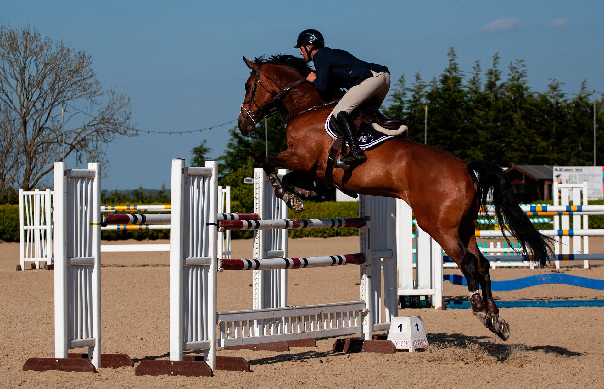

SOBRE A ESCOLA DE EQUITAÇÃO
Com base nos ensinamentos e filosofia de Dominique Barbier e do Treinamento de Equidade de Priscila Thomazelli, nossa missão é treinar cavalos em adestramento clássico, equitação acadêmica e hipismo clássico sem agredi-los, ajudando-os a serem o melhor que podem ser dentro de seus esportes. Nossa missão é proporcionar a excelência nas atividades desenvolvidas, ter um sólido compromisso ético com nossos clientes.
Aprimoramos as qualidades dos conjuntos e ensinamos como superar suas dificuldades tendo sempre em mente uma atitude mental e fazendo todos acreditarem no quão fácil é montar (frase de Dominique Barbier).
Aqui na Academia e Escola de Equitação Holloway temos aulas de equitação para todas as idades (a partir de 02 anos) e niveis nas modalidades:
- Adestramento Clássico (Dressage);
- Adestramento Paraolimpico;
- Equitação;
- Equitação Acadêmica;
- Equitação Lúdica;
- Equitação Terapeutica;
- Enduro;
- Hipismo Clássico;
- Horsemanship;
- Salto e Volteio.
ESTÁBULOS - PARA SEU CAVALO:
- Baias 4x4m ou 4x5m, bem arejadas, com ventiladores, umidificadores;
- Alimentação com programa balanceado através de feno, alfafa e ração;
- Manejo exemplar e serragem maravalha para poder deitar e rolar;
- Treinamento personalizado baseado nos seus objetivos equestres em seu esporte (adestramento clássico, salto, enduro ou volteio) a curto, médio e longo prazo;
- Cuidados especiais com os cascos, crina, seus materiais (sela, bridão, etc) e ainda pode ter ducha sempre.